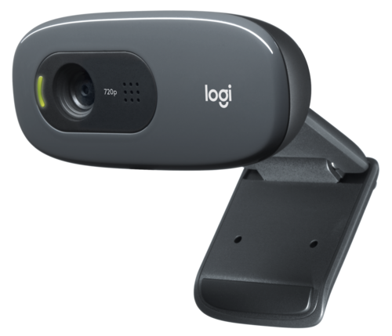

WEBCAM LOGITECH C270
PRETO
FULL HD 720p
CA C270 HD Webcam permite fazer chamadas de vídeo widescreen em HD 720p com imagem nítida e clara. Como se ajusta automaticamente às condições de iluminação, você obterá imagens mais brilhantes, apesar da iluminação fraca. Seu microfone redutor de ruídos garante que suas conversas sejam claras mesmo em ambientes movimentados. Esta pequena, rápida e ajustável webcam traz um ângulo completamente novo às videochamadas, permitindo que você grave vídeos em alta definição e publique-os em suas redes sociais preferidas. Você pode prendê-la com segurança à sua tela usando o clipe universal ou colocá-la em uma prateleira.
R$ 149,99 ADICIONAR AO CARRINHO
